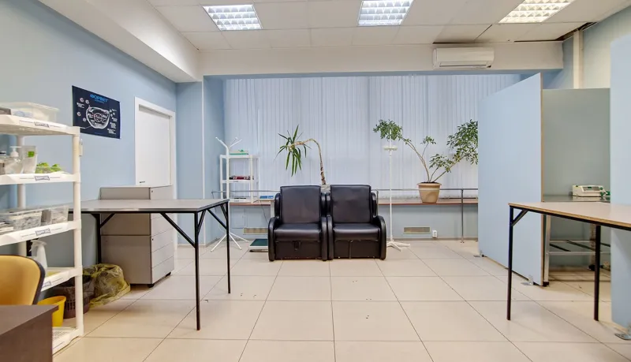

Ветаптека и зоомагазин
Ежедневно с 10:00 до 22:00: лекарства, лечебные корма, аксессуары.

О клинике
«Ветлайф» — современная частная ветеринарная клиника с круглосуточным режимом работы, удобным подъездом и местами для стоянки. Она будет полезна жителям САО и СВАО.
Хорошее оборудование, полный диагностический комплекс, лаборатория и сильное хирургическое отделение. Скидка 5% — инвалидам, студентам и пенсионерам.
Круглосуточно
Принимаем 24 часа в сутки без выходных. Двойного ночного тарифа на услуги врачей нет.
Инфекционный стационар
Отдельный стационар для животных с инфекциями — круглосуточно, плюс лечебный стационар и реанимация.
Своя диагностика
УЗИ, рентген, ЭхоКГ и лаборатория: анализы крови, мочи и кала — в клинике.
Хирургия
Стерилизация и кастрация, травматология, косметическая хирургия, скрытый косметический шов.
Узкие специалисты
Нефролог, кардиолог, дерматолог, онколог, офтальмолог, стоматолог, невролог, эндокринолог.
Ветаптека и зоомагазин
Лекарства, лечебные корма и аксессуары — в той же клинике, с 10:00 до 22:00.
Запишитесь — мы на связи круглосуточно
Москва, Бескудниковский бульвар, 12, стр. 1 · МЦК «Окружная»